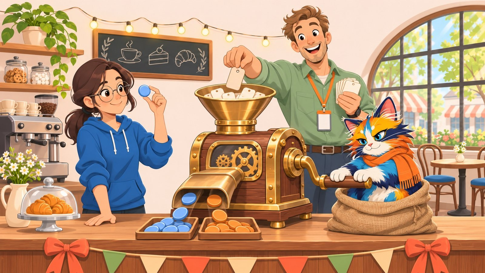
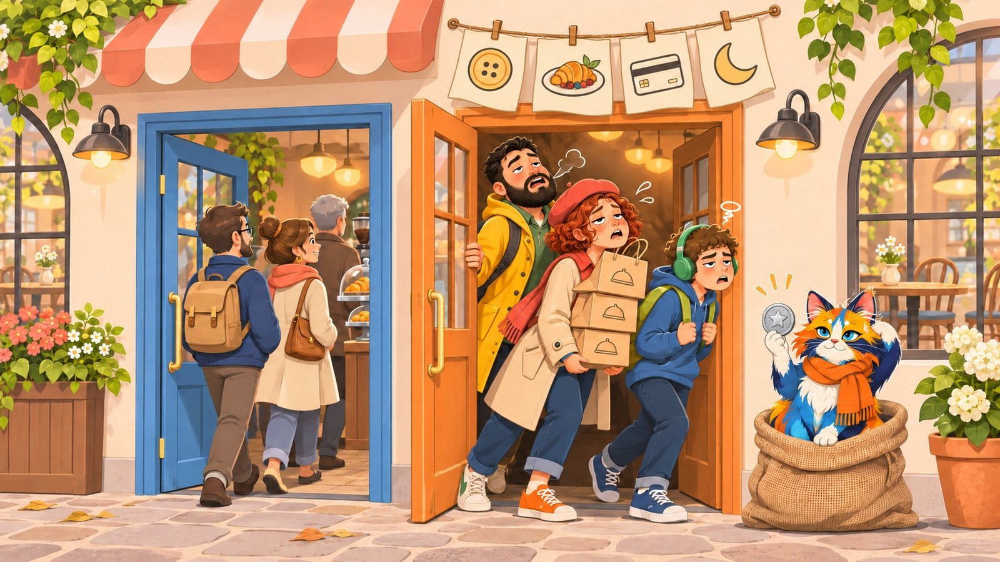
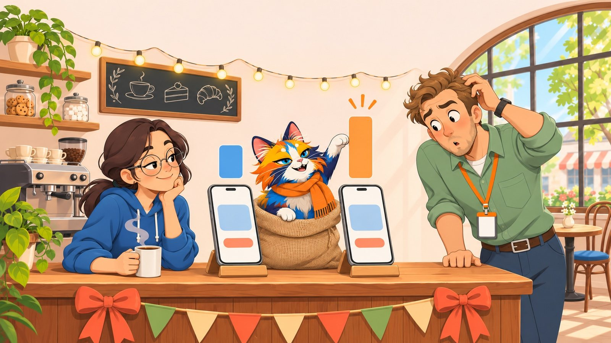

Шаг 2 из 10
Монетка, соль и хеш

В шаге 1 Котейка подбрасывал монетку у двери кафе. В приложении кота нет, а люди заходят каждый день, с телефона и с ноутбука. Разберёмся, как программа «бросает монетку» так, чтобы человек всегда оставался в своей группе.
Боб предлагает бросать монетку при каждом заходе

Всё просто: когда человек открывает приложение, берём случайное число от 0 до 1. Меньше 0,5 — старый экран, больше — новая кнопка.

А я бы решала один раз для каждого гостя — по его номеру в приложении. Тогда он всегда видит одну и ту же версию.
Представь гостя, который открывает приложение каждый день. Что с ним будет при таком способе?
У каждого гостя есть номер
Когда человек регистрируется в приложении, система выдаёт ему постоянный номер — идентификатор, коротко id («айди»). Например, user_48213. Номер не меняется: сегодня, через месяц и на новом телефоне после входа в аккаунт это тот же id. Если человек заказывает без входа, приложение запоминает номер его устройства, и для эксперимента он работает так же.
Можно ли делить прямо по номеру: до 50 000 — старое приложение, дальше — новое? Нет. Номера выдают по порядку, поэтому маленькие номера — те, кто с нами давно и заказывает часто, а большие — новички. Получится сравнение старых гостей с новыми, а не старой версии приложения с новой.
Хеш: монетка, которая помнит
Приложение берёт id гостя, приклеивает к нему название эксперимента (зачем — разберём через пару карточек) и пропускает через хеш-функцию. Хеш-функция — как мясорубка для текста: из одного и того же текста всегда выходит одно и то же число, а из чуть другого текста — совсем другое. Остаток от деления на 100 — номер ячейки от 0 до 99. Ячейки 0–49 — старый экран, 50–99 — новая кнопка.
- в мясорубку
- число на выходе
- ячейка
- группа
| id | эксперимент | ячейка | группа |
|---|
Нажми «Соседний id» несколько раз: id почти одинаковые, а ячейки разбросаны как попало. А если вернуть прежний id, ячейка будет прежней.
Тысяча гостей по ячейкам
Пропустим через хеш 1000 гостей. Половина ячеек — тест. Сколько гостей окажется в тесте?
Название эксперимента — это соль

Зачем приклеивать к id название эксперимента? Пусть в приложении идут два эксперимента сразу: новая кнопка и фото блюд в меню. Посмотрим, как 1000 гостей распределятся по четырём сочетаниям групп.
Почему не делить «как удобно»
Есть соблазн поделить гостей попроще. Открой карточки: у каждого способа группы отличаются чем-то ещё, кроме фичи. Это та же ловушка, что в шаге 1.
Три вопроса про деление
Гость открыл приложение с телефона, а вечером с ноутбука. Вход по одному и тому же аккаунту. Какую версию он увидит вечером?
Группа считается по хешу от id и соли. id тот же, соль та же, значит, и ячейка та же. Поэтому для эксперимента важно, чтобы id был одинаковым на всех устройствах.
Сплит 50/50, в эксперименте 1000 человек. В тесте оказалось 516, в контроле 484. Это баг?
При 1000 гостях число в тесте обычно гуляет примерно от 470 до 530, как в игрушке. 516 — нормально. А вот при миллионе гостей такой же перекос в процентах был бы подозрителен: к этому вернёмся в шаге 10.
Две команды запустили свои эксперименты, но хешируют только id, без названия эксперимента. Что плохого?
Без соли ячейка у человека одна на все эксперименты. Тестовые группы совпадут, и эффекты двух фич смешаются: непонятно, что сработало.
Монетка, которая помнит
- Группа определяется по id гостя, а не по случаю: один и тот же человек всегда видит одну и ту же версию.
- id вместе с названием эксперимента пропускают через хеш. Похожие id дают совсем разные числа, поэтому ячейки достаются как будто случайно.
- Доли групп держатся сами, но не ровно: при 1000 гостях в тесте обычно от 470 до 530 вместо 500.
- У каждого эксперимента своё название, поэтому тесты разных команд перемешаны независимо.
Теперь у того, что мы сделали руками, есть названия:
- Хеш
- функция, которая превращает текст в число: одинаковый текст — одинаковое число, похожий текст — совсем другое
- Соль
- добавка к id перед хешем, обычно название эксперимента; у каждого эксперимента своя
- Слот
- ячейка от 0 до 99, в которую попал гость по остатку от хеша
- Сплит
- доли групп: какие слоты отданы контролю, а какие тесту, например 50/50 или 90/10

Дальше, шаг 3: группы поделены честно, обе видят одно и то же приложение. Будет ли у них одинаковая конверсия?